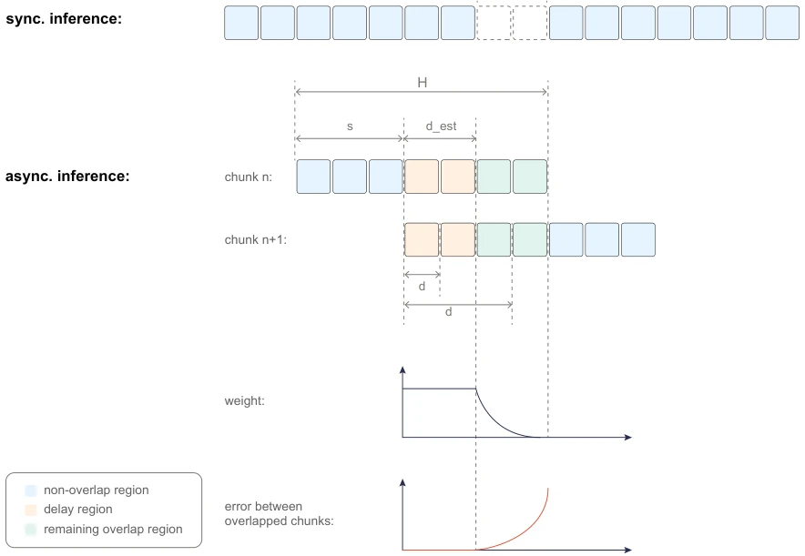
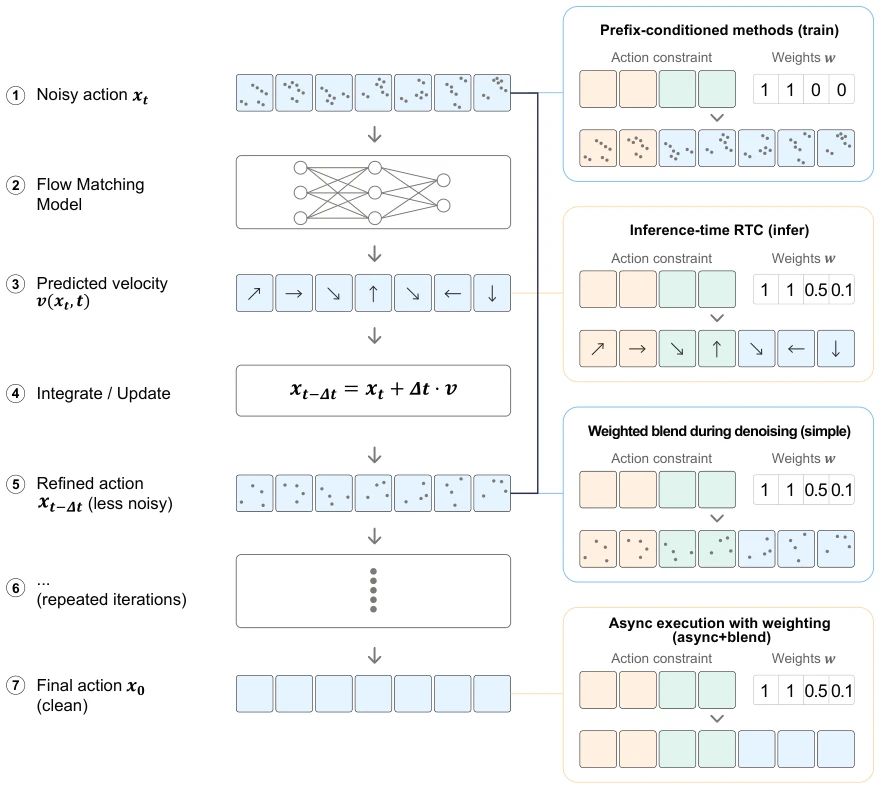
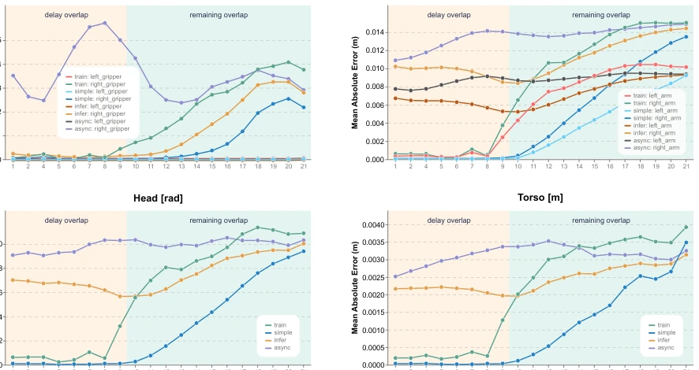
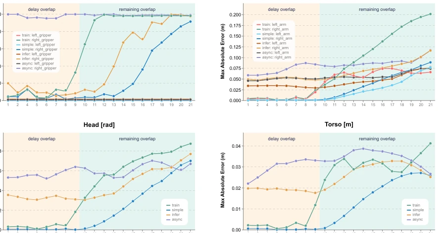
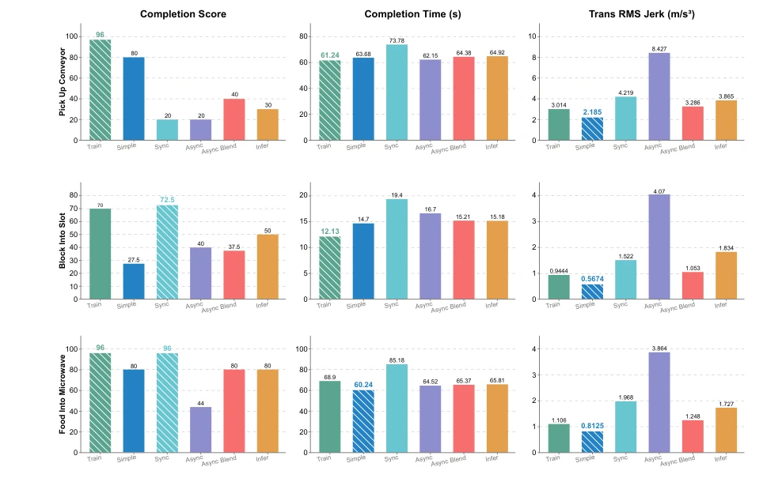
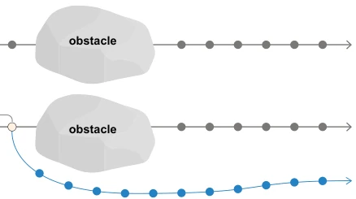

这篇论文给那些吹嘘“世界模型”能实时控制的团队泼了盆冷水。虽然 Diffusion Policy 和 WAM 在仿真里玩得花，但一到真机就露馅：延迟、卡顿、动作跳变。作者没整新模型，而是把现有的异步部署策略翻了个底朝天。结果挺讽刺：最狠的“训练时 conditioning”赢了，而听起来高大上的“推理时引导”在真机上居然搞不定延迟区域。这哪是算法创新，简直是工程排雷指南。不过，他们把“时间对齐”的重要性提上日程，这点值得点赞，毕竟再好的算法也架不住网络抖动。此外，论文坦诚承认在突发障碍物面前，前缀约束反而有害，这种不回避局限的态度在 AI 论文里实属难得。
This paper pours cold water on teams boasting that 'world models' can achieve real-time control. Although Diffusion Policy and WAM perform impressively in simulation, they fail on real hardware: latency, stuttering, action jumps. The authors did not develop a new model, but thoroughly examined existing asynchronous deployment strategies. The result is quite ironic: the most aggressive 'training-time conditioning' won, while the seemingly sophisticated 'inference-time guidance' actually failed to handle the delay region on real hardware. This is not algorithmic innovation, but rather an engineering mine-clearing guide. However, they put the importance of 'temporal alignment' on the agenda, which deserves praise, after all, even the best algorithms cannot withstand network jitter. Furthermore, the paper frankly admits that in front of sudden obstacles, prefix constraints are actually harmful; this attitude of not avoiding limitations is quite rare in AI papers.
World Action Models predict action chunks (Action Chunks) through iterative denoising; although they can distribute inference costs, end-to-end latency reaches the seconds level. Synchronous execution causes the robot to freeze or replay old actions within the inference window, producing visible discontinuities [1–4]. Asynchronous inference can overlap computation and execution, but inconsistency between consecutive chunks causes jitter at the seams. Existing VLA deployment strategies such as RTC [7] or training-time conditioning [8] have proposed solutions, but lack unified comparison on real robot platforms. Especially the engineering detail of Temporal Alignment is often overlooked, yet directly determines smoothness. This paper aims to fill this gap, evaluating the trade-offs between accuracy and smoothness of different asynchronous strategies through empirical research, revealing key bottlenecks in engineering implementation.
方法Method
整体框架基于 Chunk 执行策略，预测长度为 H 的动作序列。异步模式下，新推理在旧块消耗 s 帧后触发，形成重叠区域。方法分为四类：1) 纯异步切换：直接切换，无平滑，依赖时间对齐；2) 直接动作加权：推理后对重叠区动作加权平均，无需改训练；3) 推理时引导（Infer）：调整去噪速度场以对齐前一块，类似 RTC [7]；4) 前缀条件化（Train）：训练时将前一块的延迟区作为 clean conditioning，让模型学习一致延续，类似 Training-Time RTC [8]。此外还对比了同步执行基线。核心在于处理重叠区的“延迟区域”（pipeline delay）和“剩余重叠区”（prediction horizon），前者需强约束，后者允许模型自由预测。不同策略在约束强度与推理开销间各有取舍，本文重点评估了它们在真实延迟波动下的表现。
The overall framework is based on Chunk execution strategy, predicting action sequences of length H. In asynchronous mode, new inference is triggered after the old chunk consumes s frames, forming an overlap region. Methods are divided into four categories: 1) Pure async switch: direct switch, no smoothing, relies on temporal alignment; 2) Direct action weighting: weighted average of actions in overlap region after inference, no need to change training; 3) Inference-time guidance (Infer): adjust denoising velocity field to align with previous chunk, similar to RTC [7]; 4) Prefix conditioning (Train): during training, use delay region of previous chunk as clean conditioning, let model learn consistent continuation, similar to Training-Time RTC [8]. Additionally, synchronous execution baseline is compared. The core lies in handling the 'delay region' (pipeline delay) and 'remaining overlap region' (prediction horizon) of the overlap area, the former requires strong constraints, the latter allows model free prediction. Different strategies have trade-offs between constraint strength and inference overhead; this paper focuses on evaluating their performance under real delay fluctuations.
On a dual-arm platform, online evaluation is conducted for dynamic grasping, fine insertion/removal, and long sequence tasks. Offline analysis shows that the infer method has significantly higher error in the delay region than train and simple, failing to effectively constrain action continuity. In online results, train achieved the highest comprehensive score in three tasks (e.g., Block Into Slot got 70 points, better than sync's 72.5 points and faster), balancing accuracy and smoothness. simple is smooth but scores low on fine tasks (27.5 points). async without smoothing leads to high Jerk. Conclusions indicate that engineering temporal alignment is a prerequisite, while training-time prefix conditioning is best practice. But the paper also points out that when environment changes suddenly (such as sudden obstacles), prefix constraints are actually harmful; this is a future direction.
其他图片Other Figures

Figure 1 Timing diagram for synchronous (top) and asynchronous (bottom) chunk execution. In async mode, a chunk is divided into the delay region (yellow), remaining overlap (green), and non-overlap region (blue), where the first two form the overlap with the prior chunk.

Figure 2 Comparison of the four deployment strategies beyond the synchronous and pure asynchronous baselines. async+blend combines outgoing and incoming action chunks post hoc; simple blends predicted actions during denoising; infer guides the denoising velocity toward consistency with the previous chunk; and train conditions generation on a committed clean prefix learned during training. The sync and async baselines are omitted because neither applies blending or conditioning.

Figure 3 Mean absolute error (MAE) as a function of overlap action step, shown separately for four components: arm (position error, m), torso (position error, m), head (joint angle error, rad), and gripper (0–100). The delay region (steps 1–8) is highlighted in yellow; the remaining overlap (steps 9–20) in green. Lower error indicates stronger action constraint in the overlap region.

Figure 4 Maximum absolute error as a function of overlap action step, shown separately for arm, torso, head, and gripper. Same color coding and units as Figure 3. Lower error indicates stronger action constraint in the overlap region.

Figure 5 Online evaluation results (completion score, completion time, and translational RMS jerk) across three tasks and six methods.

Figure 6 When an obstacle appears unexpectedly, chunk n+1 must deviate substantially from the prior chunk’s trajectory. In this case, the prefix constraint becomes harmful, and none of the blending strategies discussed here are equipped to handle abrupt environmental changes.